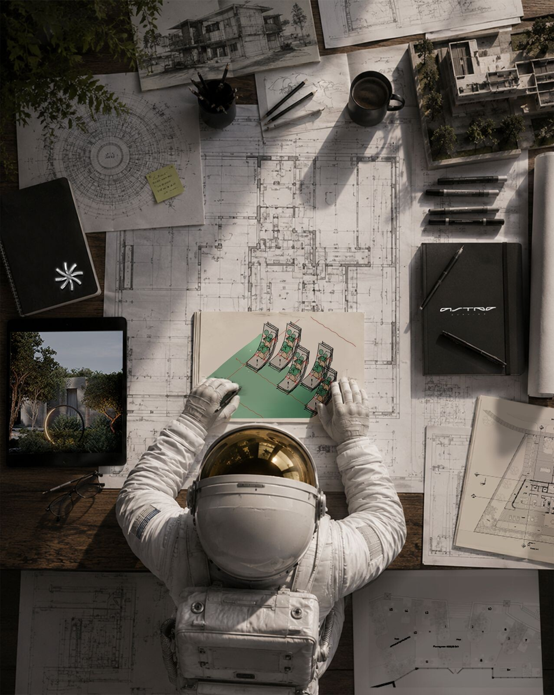

ASTRO STATION
Work
Studio
Contact

ASTRO STATION
Architecture · Interiors · Built · LA + Miami
ASTROSTATION FLIGHT DECK
MISSION · AS-01 — DESIGN-BUILD
VEL
00000
M/S
ALT
000.0
KM
COORD
34.0522°N · 25.7617°W
Skip ⏎
♪ Sound
Tap for sound